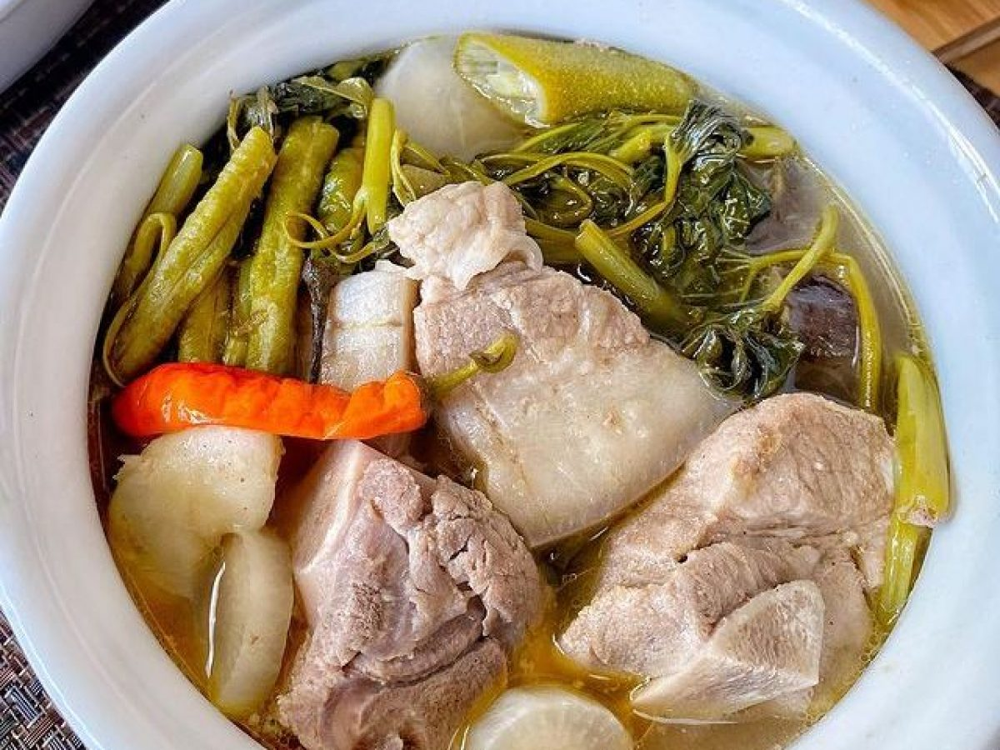

Pork Sinigang

What is Sinigang
Sinigang is a Filipino soup or stew characterized by its sour and savoury taste. It is most often associated with tamarind, although it
can use other sour fruits and leaves as the souring agent. It is one of the more popular dishes in Filipino cuisine.
Ingredients for Pork Sinigang
- 1 tablespoon vegetable oil
- 1 small onion, chopped
- 1 teaspoon salt
- 1 (1/2 inch) piece fresh ginger, chopped
- 2 plum tomatoes, cut into 1/2-inch dice
- 1 pound bone-in pork chops
- 4 cups water, more if needed
- 1 (1.41 ounce) package tamarind soup base (such as Knorr®)
- ½ pound fresh green beans, trimmed
Directions on making Pork Sinigang
- Heat the vegetable oil in a skillet over medium heat. Stir in the onion; cook and stir until the onion has softened and turned translucent, about 5
minutes. Season with salt. Stir in the ginger, tomatoes, and pork chops. Cover and reduce heat to medium-low. Turn the pork occasionally, until browned.
Pour in the water and tamarind soup base. Bring to a boil, then reduce heat. Continue simmering until the pork is tender and cooked through, about 30
minutes. Stir in green beans and cook until tender.
Go Back